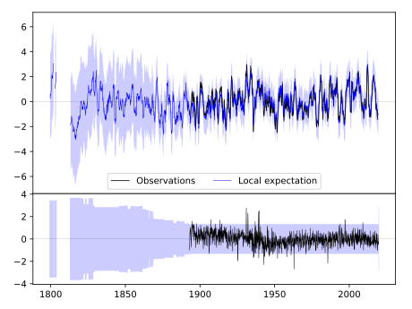
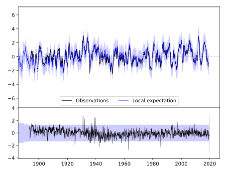

ACADEMY 2NE [USA]



| Neighbour | Name | Country | Distance | Lon/Lat | Years |
|---|
| 720479 | ACADEMY 2NE | USA | 3 | -99.1, 43.5 | 1893-2019 |
| 720481 | ALEXANDRIA | USA | 106 | -97.8, 43.7 | 1882-2019 |
| 720487 | HIGHMORE 1 W | USA | 115 | -99.5, 44.5 | 1887-2019 |
| 720492 | PIERRE RGNL AP | USA | 138 | -100.3, 44.4 | 1866-2019 |
| 720485 | FAULKTON 1 NW | USA | 166 | -99.1, 45.0 | 1892-2019 |
| 720326 | HARTINGTON | USA | 177 | -97.3, 42.6 | 1891-2019 |
| 720483 | CLARK | USA | 191 | -97.7, 44.9 | 1893-2019 |
| 720489 | MELLETTE 4 W | USA | 193 | -98.6, 45.2 | 1892-2019 |
| 720494 | VERMILLION 2 SE | USA | 194 | -96.9, 42.8 | 1884-2019 |
| 720482 | CANTON | USA | 203 | -96.6, 43.3 | 1893-2019 |
| 720312 | ALBION | USA | 219 | -98.0, 41.7 | 1892-2019 |
| 720495 | WATERTOWN RGNL AP | USA | 222 | -97.1, 44.9 | 1886-2019 |
| 720343 | WAKEFIELD | USA | 223 | -96.9, 42.3 | 1893-2019 |
| 720336 | NORTH LOUP | USA | 223 | -98.8, 41.5 | 1888-2019 |
| 720334 | MADISON | USA | 229 | -97.5, 41.8 | 1893-2019 |
| 720262 | PIPESTONE | USA | 231 | -96.3, 44.0 | 1893-2019 |
| 720156 | ROCK RAPIDS | USA | 234 | -96.2, 43.4 | 1893-2019 |
| 720317 | BROKEN BOW 2 W | USA | 238 | -99.7, 41.4 | 1893-2019 |
| 720333 | LOUP CITY | USA | 244 | -99.0, 41.3 | 1893-2019 |
| 720324 | GENOA 2 W | USA | 246 | -97.8, 41.5 | 1875-2019 |